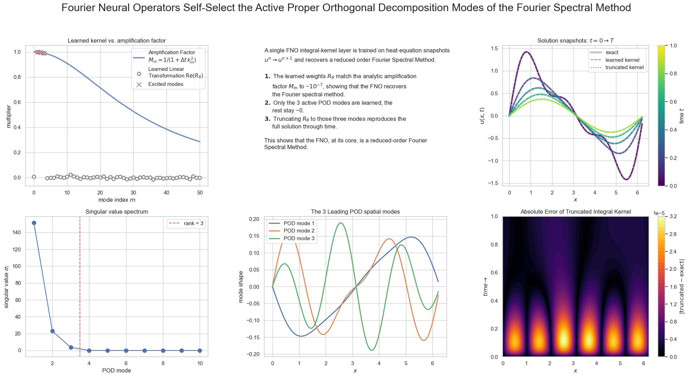

Fourier Neural Operators Are a Reduced-Order Spectral Method
Abstract
A Fourier Neural Operator (FNO) learns a mapping $G_\theta : A \to U$ between function spaces. Here I show that, with a few modifications, a single FNO layer reduces to the canonical Fourier spectral method. A single FNO integral-kernel layer is trained on heat-equation snapshots $u^n \to u^{n+1}$, with no physics supplied, and the result is striking:
- The learned weights $R_\theta$ match the analytic amplification factor $M_m = 1/(1 + \Delta t, k_m^2)$ to ~$10^{-7}$, showing the FNO recovers the Fourier spectral method.
- Only the active POD modes ($k = 1, 2, 3$) are learned; the rest stay ~0.
- Truncating $R_\theta$ to those three modes reproduces the full solution through time.
- Taken together: the FNO, at its core, is a reduced-order Fourier spectral method.

The Fourier Spectral Method
On a periodic grid of $N$ points, the discrete Fourier transform (DFT) pair is
$$ \hat{u}m = \sum{j=1}^{N} u_j, e^{-i k_m x_j}, \qquad u_j = \frac{1}{N}\sum_{m} \hat{u}_m, e^{i k_m x_j}, $$
where $u_j = u(x_j)$ is the field sampled at grid point $x_j$; $\hat{u}_m$ is the $m$-th Fourier coefficient ($-N/2 < m \le N/2$); and $k_m = 2\pi m / L$ is the wavenumber of mode $m$ on a domain of length $L$. Differentiation is diagonal in this basis:
$$ \frac{\partial}{\partial x} \to i k_m, \qquad \frac{\partial^2}{\partial x^2} \to -k_m^2, $$
so each spatial derivative becomes a multiplication of $\hat{u}_m$ by a known function of $k_m$ — the source of the method's spectral accuracy.
The FNO Layer and Integral Kernel Operator
A single FNO layer maps $v_\ell(x) \mapsto v_{\ell+1}(x)$ via
$$ v_{\ell+1}(x) = \sigma!\Big( W v_\ell(x) + (\mathcal{K} v_\ell)(x) \Big), $$
with activation $\sigma$, local linear transform $W$, and integral kernel operator $\mathcal{K}$ applied in Fourier space:
$$ (\mathcal{K} v_\ell)(x) = \mathcal{F}^{-1}!\big(, R_\theta \cdot \mathcal{F}(v_\ell), \big). $$
Here $R_\theta$ is a learned complex weight per retained mode. The operator's structure is: FFT $\to$ multiply each mode by a weight $\to$ inverse FFT.
Connecting $M_m$ and $R_\theta$
The kernel operator begins with an FFT and ends with an inverse FFT, with a per-mode multiplication between — exactly the structure of a spectral update, $u^{n+1} = \mathcal{F}^{-1}(M_m \cdot \mathcal{F}(u^n))$. They are the same operation; only the multiplier's origin differs: $R_\theta$ is learned, $M_m$ is the analytic amplification factor of the PDE update. We recover the spectral method by dropping $\sigma$ and $W$, keeping all modes, and setting $R_\theta = M_m$.
The Heat Equation
On a periodic domain,
$$ \frac{\partial u}{\partial t} = \frac{\partial^2 u}{\partial x^2}. $$
Analytic solution. With $u(x,t) = \hat{u}_m(t),e^{i k_m x}$, each mode obeys $\dot{\hat{u}}_m = -k_m^2 \hat{u}_m$, so $\hat{u}_m(t) = \hat{u}_m(0),e^{-k_m^2 t}$. For the initial condition $u(x,0) = \sin(x) + 0.5\sin(2x) + 0.3\sin(3x)$ this gives the closed form (our ground truth)
$$ u(x,t) = e^{-t}\sin(x) + 0.5,e^{-4t}\sin(2x) + 0.3,e^{-9t}\sin(3x), $$
which excites exactly three wavenumbers, $k = 1, 2, 3$.

Spectral solution. The DFT sends $\partial_{xx} \to -k_m^2$, giving $\dot{\hat{u}}_m = -k_m^2 \hat{u}_m$. A backward (implicit) Euler step, $(\hat{u}_m^{,n+1} - \hat{u}_m^{,n})/\Delta t = -k_m^2 \hat{u}_m^{,n+1}$, yields
$$ \hat{u}_m^{,n+1} = M_m, \hat{u}_m^{,n}, \qquad M_m = \frac{1}{1 + \Delta t, k_m^2}, $$
the amplification factor that $R_\theta$ must reproduce.
uhat = np.fft.fft(u0) # FFT of initial condition (once)
M = 1.0 / (1.0 + dt * k**2) # amplification factor per mode
for n in range(nsteps):
uhat = uhat * M # backsolve in Fourier space
u = np.real(np.fft.ifft(uhat)) # inverse FFT to physical space

Results
I train a single integral-kernel layer (no $W$, no activation) on the snapshot pairs $u^n \to u^{n+1}$ generated above, learning one complex weight $R_\theta$ per Fourier mode.
The FNO recovers the spectral method. On the modes the data actually excites ($k = 1, 2, 3$), the learned weights match the analytic amplification factor, $R_\theta = M_m$, to ~$10^{-7}$. The network rediscovers $1/(1 + \Delta t, k_m^2)$ from data alone.

The FNO self-selects the active modes. A proper orthogonal decomposition (POD) of the solution trajectory shows it is rank 3: only three singular values are nonzero, and the leading POD modes are exactly $\sin x, \sin 2x, \sin 3x$. The heat equation is linear and diagonal in Fourier space, so unexcited modes start at zero and stay there — during training those weights receive no gradient and remain ~0. The layer therefore learns only the modes it needs, which is precisely the subspace POD identifies.
Truncation is lossless. Zeroing every weight outside $k = 1, 2, 3$ and rolling the kernel forward reproduces the full solution through time to the same ~$10^{-7}$ accuracy. A three-parameter spectral kernel captures the entire dynamics — the FNO, at its core, is a reduced-order Fourier spectral method.